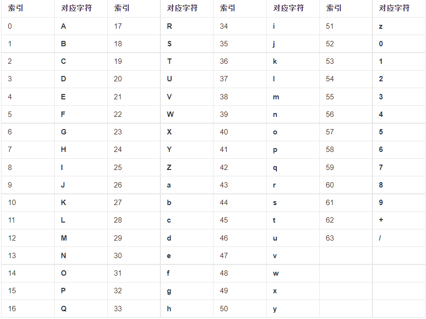
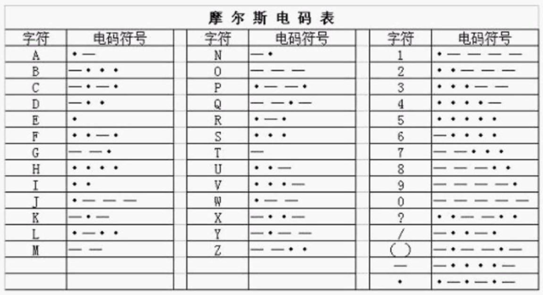
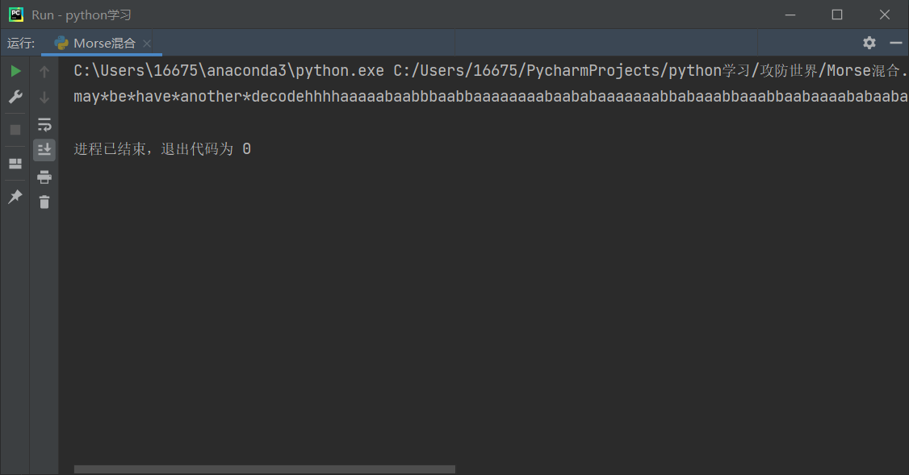

Crypto基础
密码学是研究编制密码和破译密码的技术科学，本文将主要介绍密码学中常见的几种加密方式的原理以及实际的应用，并以攻防世界新手练习区例题为例进行分析。
Base64
Base64是网络上最常见的用于传输8Bit字节码的编码方式之一，Base64就是一种基于64个可打印字符来表示二进制数据的方法。
Base64编码是从二进制到字符的过程，可用于在HTTP环境下传递较长的标识信息。采用Base64编码具有不可读性，需要解码后才能阅读。
加密原理
Base64中的64表示64个可打印的字符（具体范围如下表所示），而要完全表示64个不同的字符至少需要6位二进制数(2^6=64)，我们知道一个字符类型数据在计算机中占用1Byte的存储空间，而1Byte为8bit，即一个字符实际在计算机中存储的是一个8位二进制数。
Base64加密的实质是将每三个8bit字节转换为四个6bit字节（8*3=4*6），再在6bit字节的高位添0以补全为8位，最终转换为四个8bit字节，完成加密。例如：字符串s13，对应的ascii码为115 49 51，转换为二进制：01110011 00110001 00110011，将其分为4组：011100 110011 000100 110011，向高位补零：00011100 00110011 00000100 00110011，十进制为28 51 4 51，对照Base64编码表得到加密后的结果为：czEz，加密完成。

我们发现这样貌似只能加密3的整数个字符，当末尾的字符无法凑成3的整数个的时候我们在用一个不在编码表中的字符加以代替，这个字符通常使用“=”，举个简单的例子：字符“A”，ascii码为65，转换成二进制数：01000001，由于此时末尾字符个数不为3的整数倍（1个），我们仍然将其分成四组，并且空位用“=”代替：010000 010=== ====== ======，对于不全为空的字节，在其末尾空位添零，全为空的字节在转换时用“=”代替：010000 010000 ====== ======，对应字符为：QQ==，加密完成。
通过以上示例不难发现Base64加密的密文中，“=”最多只能出现两个且只会在末尾出现。
Base32,Base16
Base32,Base16与Base64类似，区别是他们分别得到5bit字节和4bit字节。Base32是将每5个8bit字节转换成8个5bit字节，编码字符范围为：大写字母A~Z和数字2~7，密文末尾最多可能出现7个“=”。Base16是将每个8bit字节转换成2个4bit字节，编码范围为：数字0~9和大写字母A~F，密文末尾不会出现“=”。
例题分析
题目链接
分析与解答
文本很明显是一串base64密文，直接解密即可，可以使用在线解密工具也可以直接用python的base64包解密，以下是python解密代码：
1 | import base64 |
运行，得到结果：cyberpeace{Welcome_to_new_World!}
凯撒密码(Caesar Cipher)
在密码学中，恺撒密码（英语：Caesar cipher），或称恺撒加密、恺撒变换、变换加密，是一种最简单且最广为人知的加密技术。它是一种替换加密的技术，明文中的所有字母都在字母表上向后（或向前）按照一个固定数目进行偏移后被替换成密文。这个加密方法是以罗马共和时期恺撒的名字命名的，当年恺撒曾用此方法与其将军们进行联系。
加密原理
在加密时，明文中的每个字母按照字母表的顺序向前或向后移动某一特定的位数并替换得到密文。例如明文为：FLAGISHERE，偏移量为3，那么密文就得到了：IODJLVKHUH，解密时则反向移动3位或正向移动26-3=23位。
例题分析
题目链接
分析与解答
根据字母的个数以及排列方式来看很明显对字母采用了凯撒加密，只需根据攻防世界常见的“cyberpeace”开头的flag格式得到正向偏移量为14，以此编写代码如下：
1 | wordList = ['a', 'b', 'c', 'd', 'e', 'f', 'g', 'h', 'i', 'j', 'k', 'l', 'm', 'n', |
运行，得到flag：cyberpeace{you_have_learned_caesar_encryption}
摩尔斯电码(Morse Code)
摩尔斯电码也被称作摩斯密码，是一种时通时断的信号代码，通过不同的排列顺序来表达不同的英文字母、数字和标点符号。它发明于1837年，是一种早期的数字化通信形式。不同于现代化的数字通讯，摩尔斯电码只使用零和一两种状态的二进制代码，它的代码包括五种：短促的点信号“・”，保持一定时间的长信号“—”，表示点和划之间的停顿、每个词之间中等的停顿，以及句子之间长的停顿。
加密原理
摩尔斯电码的加密原理比较简单，就是长信号（一般为“—”）与短信号（一般为“·”）的组合来替换常见的字符，比如明文为：SOS，对应摩尔斯电码表加密后得到：··· — — — ···

例题分析
题目链接
分析与解答
附件中仅由“0”和“1”构成，且每一部分以空格分开，则考虑采用了摩尔斯加密。将摩尔斯电码表中的对应关系定义为一个字典类型，遍历密文中的每一部分并得到明文字符，python代码如下：
1 | t = open('2.txt', mode='r') # 2.txt为题目附件 |
运行，flag以小写字母输出并格式化：cyberpeace{morsecodeissointeresting}
二进制幂数加密(Binary idempotent encryption)
二进制幂数加密法，由于英文字母只有26个字母。只要2的0、1、2、3、4、5次幂就可以表示31个单元。通过用二进制幂数表示字母序号数来加密。
加密原理
在进行二进制数转十进制数的结果为二进制各位数的幂数之和，例如1010转换成十进制数时：2^1+2^3=10，并且N位二进制数能表示的最大十进制数为2^n-1，如四位二进制数最多可表示的十进制数为1111，即15。
由于英文字母总数为26，因此我们只需5位二进制数即可表示所有的英文字母(2^5-1=31)，例如：
明文：I LOVE CRYPTO
字母序号：9/12 15 22 5/3 18 25 16 20 15（空格表示字母的间隔，斜杠表示单词的间隔）
由于9=2^0+2^3，因此加密结果为：03，以此类推
密文： 03/23 0123 124 02/01 14 034 4 24 0123
栅栏密码(Rail-fence Cipher)
传统栅栏密码
加密原理
首先确定一个key值，将明文字母按从上往下的顺序依次交替排列成key行，最后每行字母依次连接组成新字符串，得到密文。例如：
明文：HAVE A GOOD DAY key值：3
将字母依次交替排列成3行：
| H | E | O | D |
|---|---|---|---|
| A | A | O | A |
| V | G | D | Y |
最后每行字母依次连接得到密文：HEODAAOAVGDY
值得一提的是，栅栏密码本身有一个潜规则，就是组成栅栏的字母一般不会太多。（一般不超过30个，也就是一、两句话）
W型栅栏密码
加密原理
与传统栅栏密码类似，第一步先确定key值，在排列明文字母时不是垂直纵向排列，而是斜向45度角进行排列，且在排列key行后，变换方向后继续排列（右下变右上，右上变右下），组成多个“W”形，最后每行字母依次连接组成新字符串，得到密文。例如：
明文：HAVE A GOOD DAY key值：3
将字母按“W”形排列成3行：
| H | . | . | . | A | . | . | . | D | . | . | . |
|---|---|---|---|---|---|---|---|---|---|---|---|
| . | A | . | E | . | G | . | o | . | D | . | Y |
| . | . | V | . | . | . | O | . | . | . | A | . |
最后每行依次连接得到密文：HADAEGODYVOA
例题分析
题目链接
分析与解答
密文看上去就是被打乱的flag值，基本上就是栅栏加密的结果，并且发现是W型栅栏加密。可以直接使用在线栅栏解密：
培根密码(Bacon Cipher)
加密原理
培根加密时，明文中每个字母会转换成一组五个由a和b组成的字母，其转换关系表如下：
| A/a | aaaaa | H/h | aabbb | O/o | abbba | V/v | babab |
|---|---|---|---|---|---|---|---|
| B/b | aaaab | I/i | abaaa | P/p | abbbb | W/w | babba |
| C/c | aaaba | J/j | abaab | Q/q | baaaa | X/x | babbb |
| D/d | aaabb | K/k | ababa | R/r | baaab | Y/y | bbaaa |
| E/e | aabaa | L/l | ababb | S/s | baaba | Z/z | bbaab |
| F/f | aabab | M/m | abbaa | T/t | baabb | ||
| G/g | aabba | N/n | abbab | U/u | babaa |
事实上，一般情况下，密文最终形式并不会由a和b组成，加密者通常会准备两种不同的字体，分别代表a和b，并且用一段由这两种字体所格式化的虚假信息作为密文，例如密文为：flagishere，根据字体的差异，将未加粗字体看作a，加粗字体看作b，得到：aaaab baabb，对照关系表得到明文为：bt.
弗朗西斯·培根还另外准备了一种方法，将大小写分别看作a和b，这样可以适用在无法使用不同字体的场合，比如在处理纯文字的数据时。
其实培根密码还有另外一种加密关系：
| a | AAAAA | g | AABBA | n | ABBAA | t | BAABA |
|---|---|---|---|---|---|---|---|
| b | AAAAB | h | AABBB | o | ABBAB | u-v | BAABB |
| c | AAABA | i-j | ABAAA | p | ABBBA | w | BABAA |
| d | AAABB | k | ABAAB | q | ABBBB | x | BABAB |
| e | AABAA | l | ABABA | r | BAAAA | y | BABBA |
| f | AABAB | m | ABABB | s | BAAAB | z | BABBB |
在解密培根密码时两种加密关系都要考虑。
例题分析
题目链接
分析与解答
观察密文，很明显是莫尔斯电码的形式，摩尔斯解密之后，得到如下结果：

may be have another deconde 提示我们这并不是最终结果，后面还有另外一种加密方式，可以看到后面字母由a和b组成，考虑是培根加密，可以编写python程序解密：
1 | import re |
解密得到结果：ATTACKANDDEFENCEWORLDISINTERESTING
格式化后得到flag值：cyberpeace{attackanddefenceworldisinteresting}
RSA算法(RSA algorithm)
RSA是1977年由罗纳德·李维斯特（Ron Rivest）、阿迪·萨莫尔（Adi Shamir）和伦纳德·阿德曼（Leonard Adleman）一起提出的。当时他们三人都在麻省理工学院工作。RSA就是他们三人姓氏开头字母拼在一起组成的
RSA算法是引用最为广泛的一种公钥加密算法，所谓公钥加密(public key encryption)，也叫非对称加密。加密过程中，用于对数据加密的密钥称为公钥，对所有人公开，而对数据解密的密钥称为私钥，由接收者所保存，不对外公开。
加密原理
数学原理
因为用以加密的公钥是对外公开的，那么我们应当保证解密的密钥无法被根据公钥反推出来，那要达到此目的必须使用到单向函数(One-way function)，即对于每一个输入，函数值都容易计算，但给出一个随机的函数值，要计算出原始的输入数据却很困难。常见的比如模运算：m^e mod n = c，已知m,e,n要求出密文c很简单，而已知e,n,c要求出明文m却很困难，RSA算法正是运用了这一特性。
将加密方程变换：c^d mod n = m，其中d就是用以解密的密钥，它本身也不能被公开的n和e反推出来，根据数论：寻求两个大素数比较简单，而将它们的乘积质因数分解却极为困难。加密方程可以写成：m^e = kn + c (k为正整数)，将c^d = (m^e - kn)^d带入解密方程中得到：(m^e - kn)^d mod n = m，由于(m^e - kn)^d多项式展开后的结果中只有m^ed项不包含n的乘积，因此方程化简为：m^ed mod n = m，可见，正确选取e和d使其满足此方程成为了算法的核心所在。
根据欧拉定理：m，n为正整数，且gcd(m,n) = 1，则有m^φ(n) ≡ 1(mod n)，其中φ(n)称为对模n缩系的元素个数，即在小于等于n的正整数中与n互质的数的个数。对于一个大数n而言，要求出φ(n)的值是很困难的，但如果这个数本身就是质数，那么显然φ(n)=n-1。此外，φ(n)还有一个特性：对于互质的两个正整数p,q而言，φ(pq) = φ(p)φ(q)，那么我们在选取n的值时可以先选取互质的两个数p和q，根据以上定理，n = pq，φ(n) = φ(pq) = (p-1)(q-1)。
根据以上原理，我们将欧拉定理方程进行变换，等式两端同时取k次幂并乘上m，最后变换成模运算的形式得到：m^{kφ(n)+1} mod n = m，与我们之前得到的 m^ed mod n = m 相比照，联立两式：ed = kφ(n) + 1，写成模运算形式：ed mod φ(n) = 1，因此我们可以通过选取加密密钥e来得到解密密钥d，值得注意的是这里e值的选取必须保证gcd(e,φ(n)) = 1，否则d值将不存在，具体数学证明略。
最终将e和n的值公布，作为加密公钥，将d的值保留作为解密私钥。由于他人未知p和q的值，且n是一个大数的情况下对n进行质因数分解十分困难，也就无法得到φ(n)的值，就无法根据e求得d。
RSA允许你选择公钥大小。512位密钥被视为不安全；768位密钥不用担心受到除了国家安全管理（NSA）外其他事物的危害；1024位几乎是安全的。
加密原理参考链接：探秘公钥加密算法RSA
算法流程
（1）选取两个大素数p和q，得到乘积n = pq，则φ(n) = (p-1)(q-1)。
（2）选取一个大整数e，满足gcd(e,φ(n)) = 1。
（3）根据方程 ed mod φ(n) = 1 确定d的值。
（4）公开n和e，作为公钥，私密保存d，作为私钥。
（5）加密方程为：c = m^e mod n. 解密方程为：m = c^d mod n
例题分析
题目链接
分析与解答
题目直接给出了p，q，e的值，要求求解d，得到φ(n)后根据 ed mod φ(n) = 1求解即可，这里我直接将模运算写成了 ed = kφ(n) + 1，并遍历k的值，若e能被 kφ(n) + 1 整除则得到解密密钥d。
1 | p = 473398607161 |
运行得到结果：125631357777427553，flag即为：cyberpeace{125631357777427553}。
 微信
微信 支付宝
支付宝